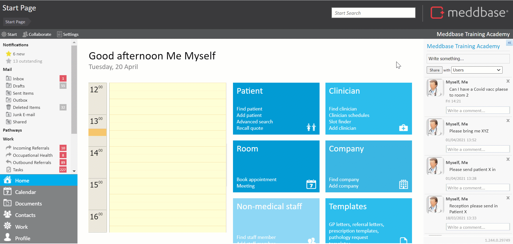
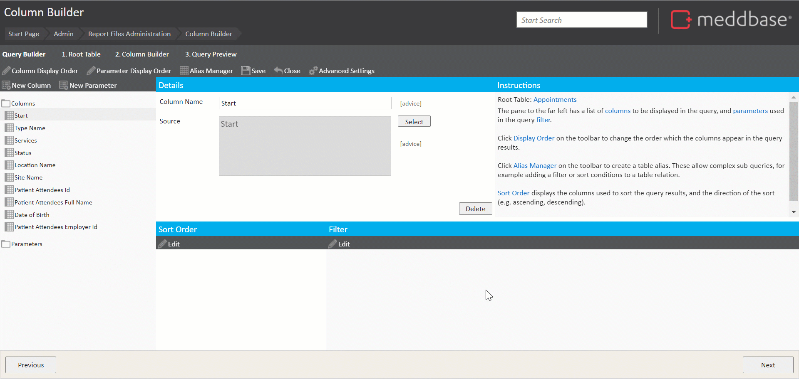
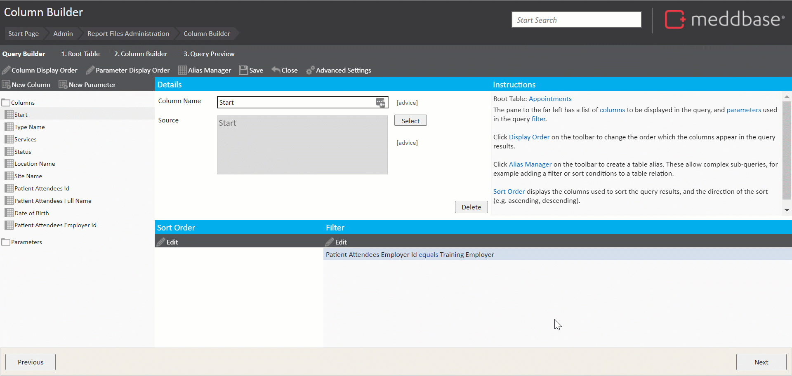
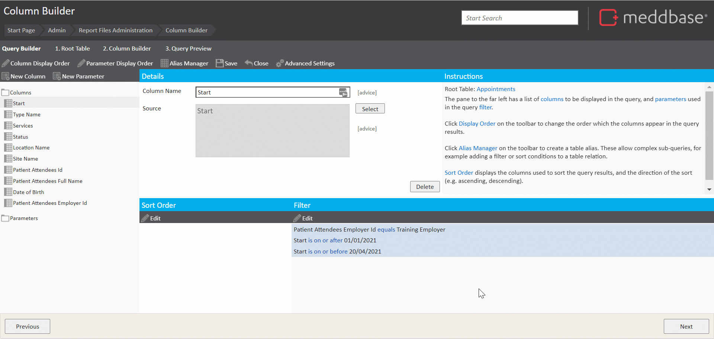
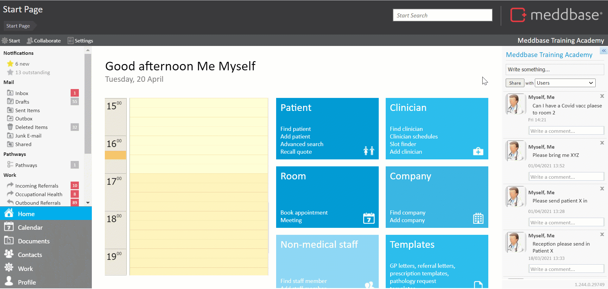

This article will walk you through the process of building a report to show all appointments for employees of a specific company within a specific date range. The report will include filters to only show appointments matching certain criteria, and parameters to let the user choose an employer and date range to filter by.
The complexity and time required here are medium.
Click here for other report examples.
The process of building a report can be broken down into the following steps:
1. From the Start Page navigate to Admin > Report management*.
2. Click New report query to open the Query Builder.
3. Select Appointments from the list of tables as the Root Table**.
* Building reports requires access to the Admin section.
** Selecting a Root Table determines what will be displayed in each Row of your report e.g. selecting Appointments as the root table will result in a report displaying an instance of an appointment in each row. Click here for a detailed article on selecting a root table.
4. Click Next to open the Column Builder.
5. In the upper left corner, click New Column and expand the Column folder to add columns to the report*.
For this report you want to include the following columns**:
Holding down the Ctrl key on your keyboard allows adding multiple columns to a report in a sequence. ** Some of the desired columns do not belong to our root table. They are available in linked tables.
6. From the Columns folder, add the following:
7. Expand the Sites table, open the Columns folder and add:
8. Expand the Patient Attendees table, open the Columns folder and add:
9. Close the Select Column window.

10. Click Save.
11. In the Select Report name dialogue that appears, add in a Report name and click OK*.
To organise your reports into folders, you can use the following pattern: Folder name/Report name, e.g. Test reports/Report on Appointments containing filters and parameters.
In this example, you will narrow down the report results to show appointments for patients employed by a specific company and within a specific time period. To do this, you’ll include some filter conditions.
To create a new filter condition:
1. Click Edit in the Filter section.
2. Click Add Condition, then click Select column or parameter.
3. Click the Patient Attendees Employer Id column (you’re filtering on the patient’s employer) and hit Select.
4. Click Select Company to choose the company to filter by.
5. In the Company Search dialogue, input your search criteria.
You can use the search function to search your database of existing companies, companies matching your search criteria will appear on the right.
6. From the matching companies, click on the relevant company to select it.
7. Close the Filter Builder.
8. Then Save your query.

Next, you’ll need to add conditions to restrict your list of appointments to a specific time period:
1. Click Edit in the Filter section.
2. Click Add Condition, then click Select column or parameter.
3. Select the Start column (as this stores the start date of the appointment).
4. Change is on to is on or after (this condition states that you only want to show appointments on or after a specific date).
5. Include a date in the format DD/MM/YYYY in the empty field next to day.
6. Click Add Condition, then click Select column or parameter.
7. Again, select the Start column.
8. Change is on to is on or before (this condition states that you only want to show appointments on or before a specific date).
9. Include a date in the format DD/MM/YYYY in the empty field next to day.
10. Close the Filter Builder.*
11. Then Save your query.
The Filter Builder includes a Validate filter function, allowing the user to ensure that there are no conflicts or contradicting conditions and the filter is logical.

12. Click Next to preview the report.
Provided your date range isn’t too large, and there are rows matching your filter conditions, your report should return some results.
13. Click Previous to return to the report query builder.
Ideally, you'd want the user to be able to input an employer and date range to filter by, so that they can re-run the report for different criteria.
To do this, you’ll need to parameterise your existing filters. Using parameters lets you choose which values to include in your filter conditions:
1. Click Edit in the Filter section to display the Filter Builder.
2. In the Filter Builder window that appears, for each condition
The parameter is applied to the condition.
The parameter name is what the user will see next to the field where they need to input a value, so it should be descriptive. You would choose Employer for the first condition, then From Date and To Date for the next two conditions.
Parameters are mandatory by default, which means the user has to include a value before they can run the report. You can make parameters optional, which means that the report will run without those filters unless specified, or provide a default value.
3. Repeat step 2 for further conditions.
4. When Conditions have been set up, click Close in the Filter Builder.
5. Click Next to preview the report
You should be given the option to select an employer and date range to filter by.

Once a report is finished and saved, it can be published, so that other Meddbase users can utilize it.
To publish a saved report the following steps apply:
1. From the Start Page navigate to Admin > Report management.
2. Expand the relevant folder on the left-hand pane (Test reports in this case).
3. Click on the report you wish to publish and hit Publish report.
4. Assign a name the report will be published under (you can use the same name the report was saved under).
The report will now be available from the Start Page under the Reports tile. A Meddbase user can now navigate to that section, select the published report and run the query.
The results can be exported to Excel for further analysis by clicking this icon:
